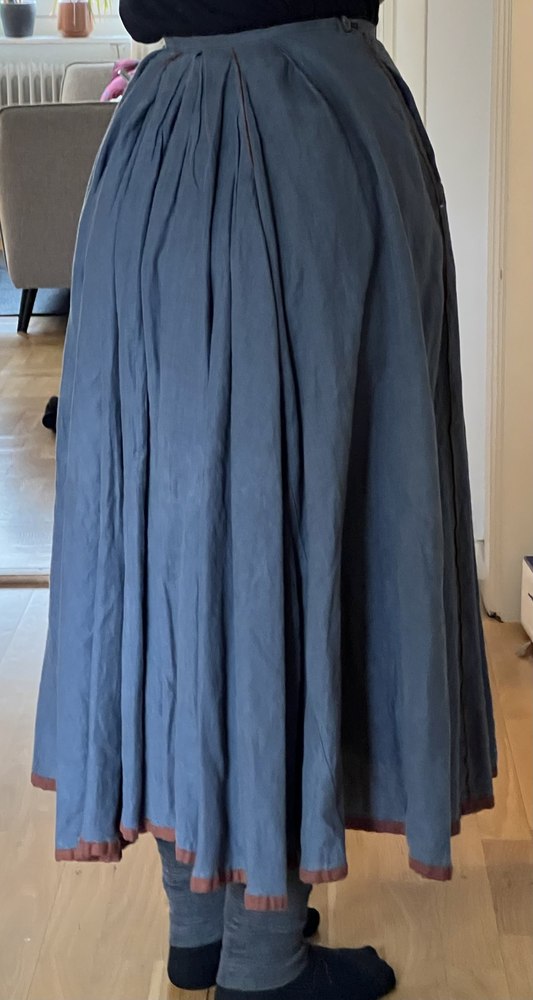
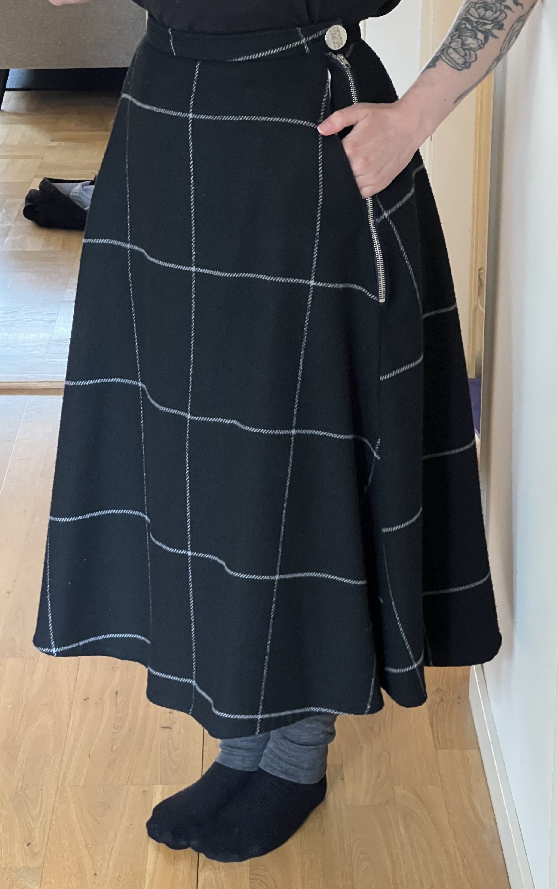
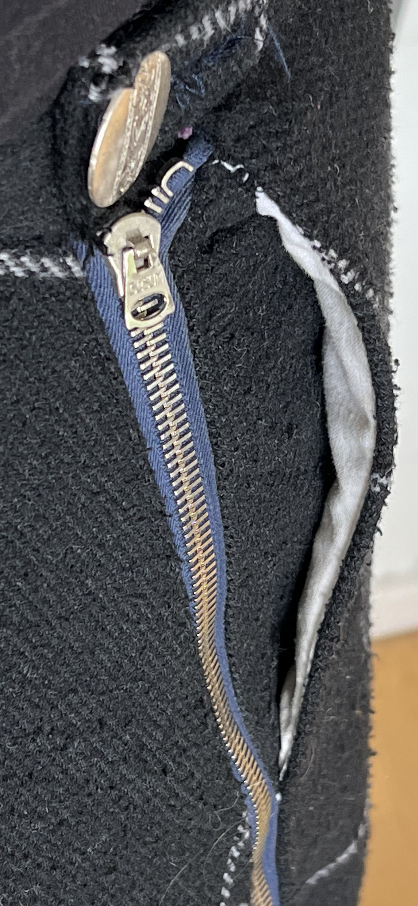

Grey Linen Skirt
I have one skirt pattern that is inspired by a victorian walking skirt that I have made several times in different variations and fabrics.
I made a grey linen skirt inspired by an edwardian walking skirt with orange piping and the hem is finished with double folded tape from the same fabric as the piping. There is some piecing, the closure is just a single button and a plastic zipper that I somehow by chance already had in an exactly matching color. I didn't hang up the skirt for long enough before hemming, and the weave of the linen is very loose, so the hem has warped a bit.
Light Blue Striped Skirt
This skirt is made from thrifted curtains that were originally a very light beige, and I overdyed them with cool-toned black. Since they were a cotton/polyester blend, the stripes took the colors differently well, resulting in this pattern. They close with a button on the waistband and then two pairs of hooks and eyes above a zipper (I didn't have a zipper of the right length). The hem is a hand-sewn blind hem.
Heavy Wool Skirt
This skirt is from a very heavy wool-polyester blend that makes it heavy but also very warm. Perfect for -10°C or less outside. It closes with a large metal button and a long metal zipper. It has a large pocket anchored to the waistband, and there is some piecing in the pattern pieces along the hem. The waistband is drafted on a slight curve.
 Blue Split Skirt
This skirt is a split skirt, so behind the buttons it has a crotch and it can unbutton to a very wide pair of pants. It's very nice for cycling or on windy days. The fabric is cotton from the thrift store, and I hand-embroidered the leaves all along the hem. It is a commercial pattern from somewhere but I cannot remember where, I made this in like 2020. I also altered it a decent amount, to have a wider ham, the specific length I want, and also include pockets. There are wooden buttons on the inside in the waistband that close invisibly from the outside. There are buttons on either side of the front flap opening.